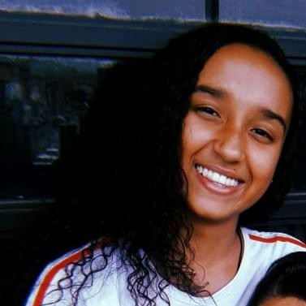

|  |
G-mail: veraluizav.s@gmail.com
Linkedin: www.linkedin.com/in/veraluizasantos
Dom Cabral, Belo Horizonte - Minas Gerais (MG)
Objetivo profissional:Atividade, flexibilidade e respeito são aspectos fundamentais nos profissionais atuais, que facilitam a convivência sadia entre colegas de trabalho e garantem um bom desempenho nas atividades propostas. Desejo assim uma oportunidade em que minhas habilidades possam ser utilizadas e eu possa crescer profissionalmente em conjunto a empresa.
Formação:
- PUC Minas
Ciências Sociais - 4º Período
Fevereiro de 2022 até Dezembro de 2026
- Escola de Formação Gerencial - SEBRAE
Ensino Médio e Técnico completo
Fevereiro de 2019 até Dezembro de 2021
Cursos:
- Curso de Aprendizagem Industrial em Assistente de Programação Web
Fevereiro de 2023 - Atualmente
SENAI CTTI
Habilidades:Idioma Inglês (Intermediário); Idioma Espanhol (Básico); Pacote Microsoft Office (Intermediário);
Experiência:
- Estagiária Administrativa
Responsável pelo controle financeiro, de pessoa física e jurídica, auxílio no departamento de pessoas e organizadora de documentos gerais
Fevereiro de 2022 - Novembro de 2022
Do Your Job
Contatos para referência:
- Samuel Freitas - (31) 98895-9964
Professor SEBRAE
- Alessandra Bergamini - (31) 98689-2852
CEO DoYourJob
|